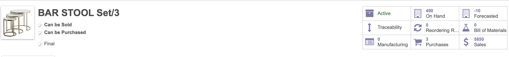
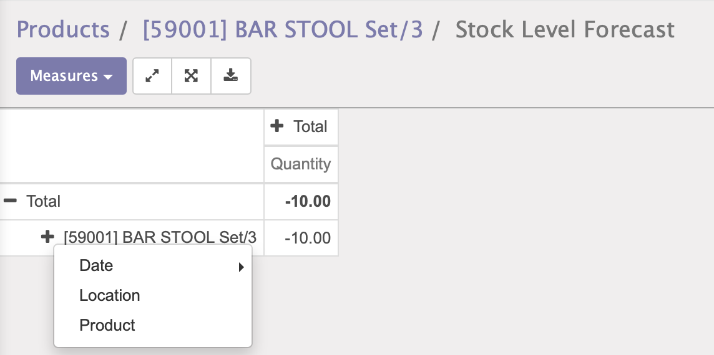
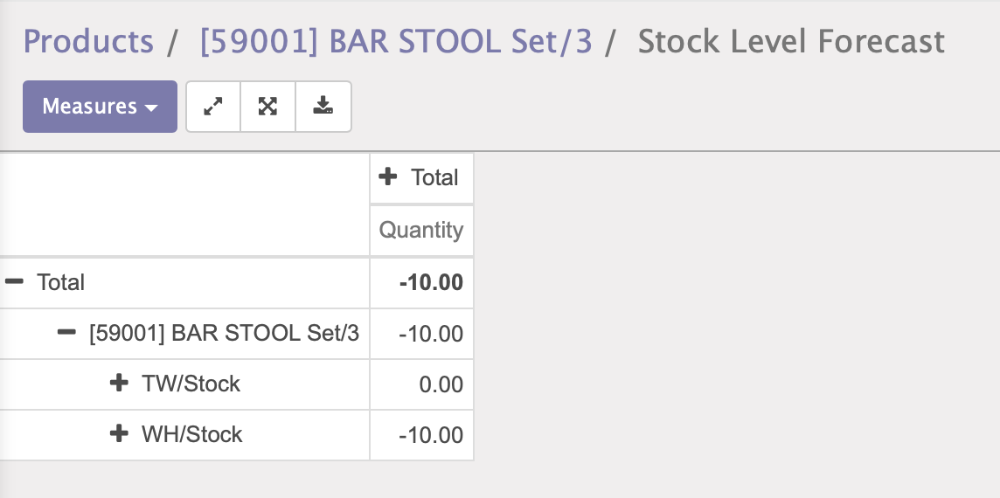

Through this module you can see the location wise foreasted stock. In Multi-Warehouse schanario it will be helpful to check the resultant available stock in multiple locations.
By installing this module you can see the location wise forecasted stock.
-----------------------------------------------------------------------------------------------------------------------------------
Default odoo smart button to check the forecasted stock.
Click on the plus sign and click on the location
It will show you the lcoation wise stock.
At DiracERP we offer end to end solution for Odoo services. Which includes analysis & consultation on the workflows and process mapping. Incase of any question regarding this module feel free to email us on sales@diracerp.com or raise a ticket on support. For more information about us please visit www.diracerp.com.